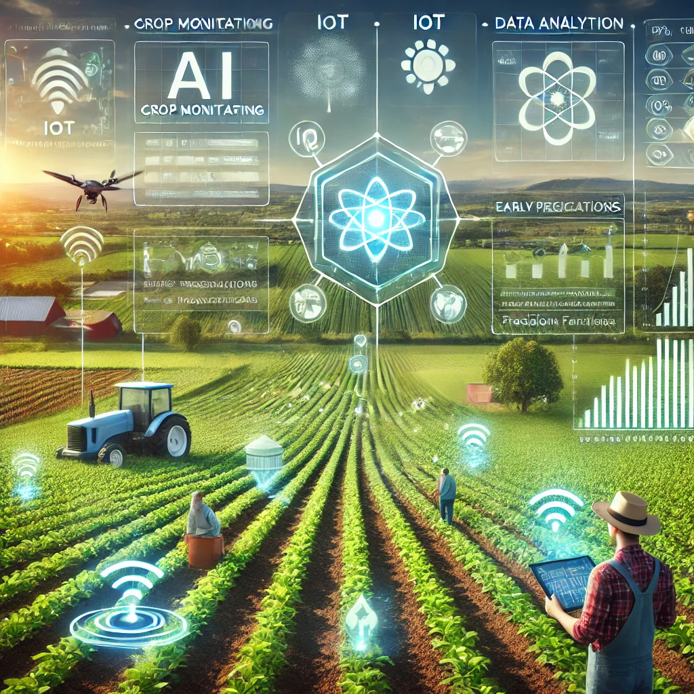
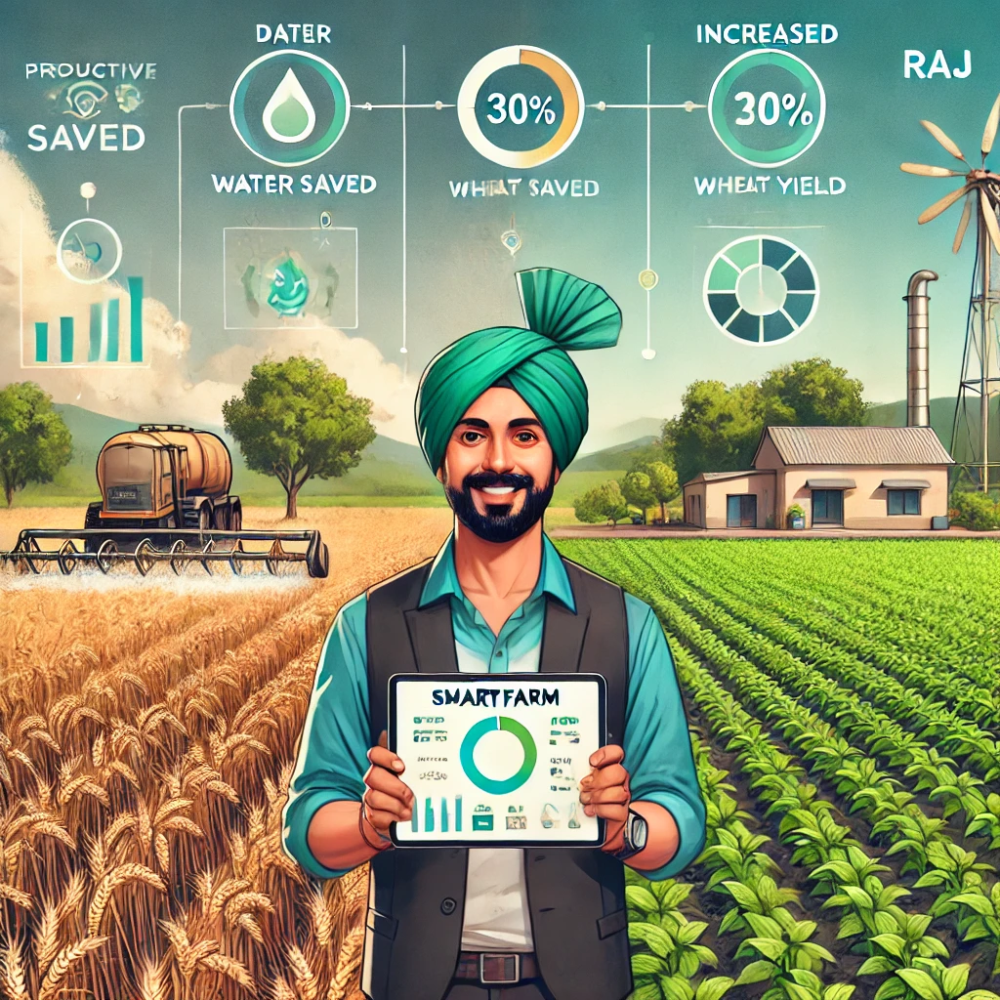
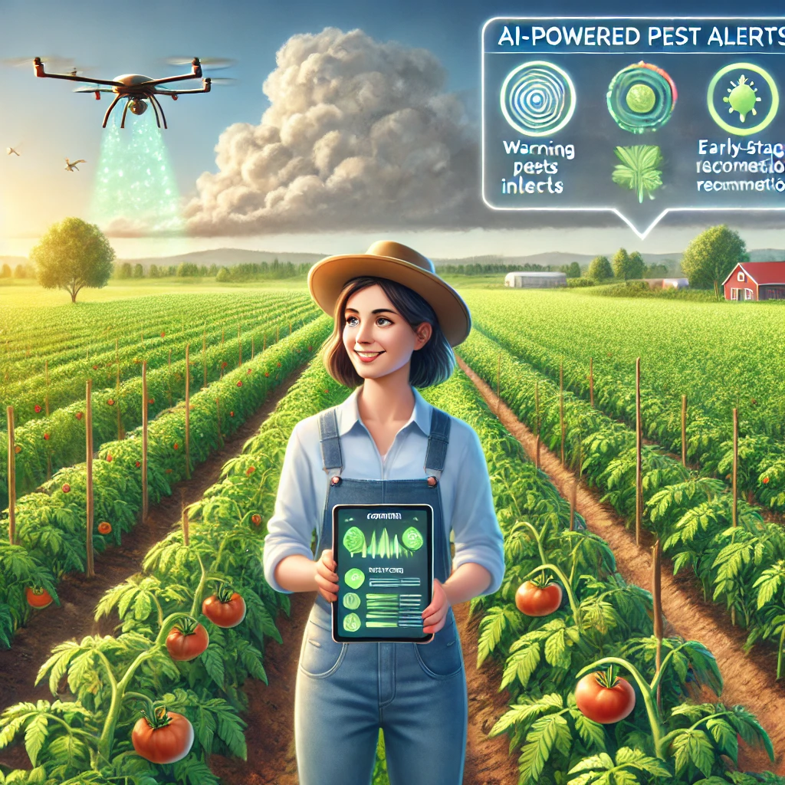

Contact Us

Optimize your crops with technology. Monitor growth, use resources efficiently, and maximize yield.
A concise overview of how AI, IoT, and data analytics optimize agricultural efficiency.
A modern approach that leverages technology to improve farm management.
Global food demand is rising, and sustainable farming ensures optimal production.
AI-powered analysis of crop health. Detects diseases and nutrient deficiencies.
IoT-based smart irrigation. Reduces water wastage.
Tests pH levels, nutrients, and moisture. Provides real-time soil health reports.
AI predicts climate changes. Farmers get alerts about weather conditions.
Smart recommendations based on crop needs. Reduces excess use of chemicals.
Mobile & desktop-friendly analytics. Easy-to-understand charts and graphs.
Farmers report up to 30% more production.
Reduces waste by 40%.
Automating farm operations cuts costs by 25%.
Lowers carbon footprint.
AI-powered insights improve productivity.
"SmartFarm helped me save 30% water while increasing my wheat production by 20%!" – Raj, India
"AI-powered insights alerted me about a pest infestation before it spread. Saved my entire tomato crop!" – Sarah, USA